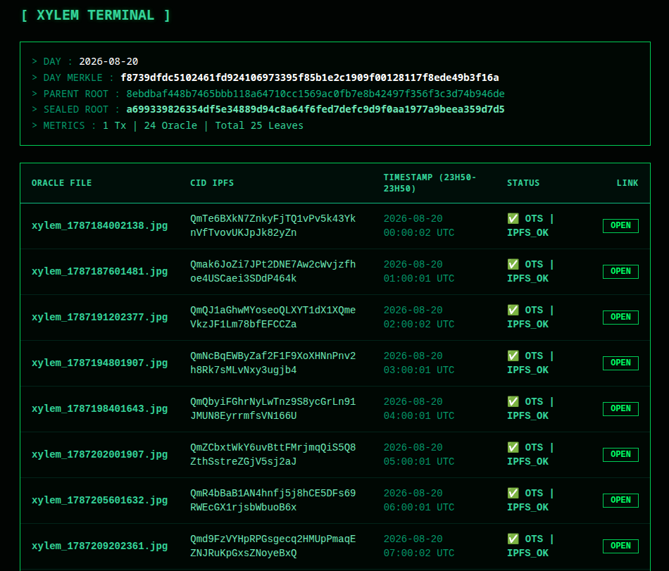
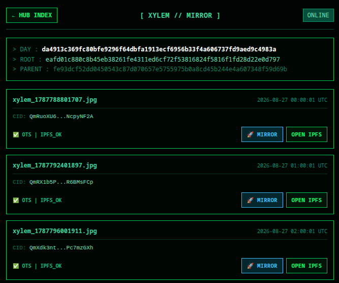

BUHS Daily Log & Cryptographic Audit

1. Executive Summary & Architecture Overview
The Big Tree Universal Harmonic System (BUHS) is a deterministic, tree-structured cryptographic ledger architecture that anchors periodic temporal data to multi-chain immutable substrates. Operating on an arboreal topology, the system synchronizes state transitions through decentralized proof mechanisms, verifiable cryptographic hashes, and permanent archival pipelines.
2. Core Operational Pipeline
2.1. Oracle & Timestamping Ingestion
- Temporal Frequency: Exactly twenty-four astronomical images are ingested per chronological day (one per hour).
- Decentralized Storage: Assets are pinned to IPFS (InterPlanetary File System)].
- Cryptographic Proofs: Each ingestion triggers a Proof-of-Timestamp (OTS) anchored to the Bitcoin network.
2.2. Ledger Sealing & Merkle Tree Compilation
- Daily Closure: Post-00:00 UTC, the daily transaction journal is sealed.
- Merkle Root Generation: A dedicated Python script (Merkle Builder) aggregates and concatenates the day's state data into a cryptographic Merkle tree structure.
- Deployment Automation: A GitHub Actions routine compiles this data into a standardized HTML ledger page and publishes it to the public repository.
2.3. Settlement & Cryptographic Anchoring
Following the compilation phase, two parallel synchronization routines finalize the daily cycle:
- Layer-2 Settlement: Extracts the twenty-four Oracle IPFS Content Identifiers (CIDs) alongside the current day's root hash (H), parent hash, and arboreal branch identifier, anchoring them immutably onto an Ethereum Layer-2 base layer contract.
- Nostr Event Broadcasting: On-the-fly encryption packages the twenty-four hourly OTS proof files. A Nostr protocol publication broadcasts these proofs alongside their corresponding IPFS image URIs. Note: OTS files are purged from local server storage post-broadcast and must be retrieved directly from the Nostr network for auditing.
3. Interface Topology: Official Daily Log vs. Mirror Ledger
Users interact with two distinct access layers for the daily records. While both render identical visual payloads sourced from the same cryptographic roots, their underlying transport optimization differs[cite: 9]:
| Parameter | Official Daily Log (Server Node) | Mirror Ledger Page |
|---|---|---|
| Primary Focus | Exhaustive archival compliance & full desktop rendering. | Fluid, responsive multi-device execution. |
| CID Resolution | Full, un-truncated cryptographic CIDs. | Streamlined resolution paths. |
| Image Delivery | Direct retrieval via local Swiss node (Strata-1 UTC synchronized). Subject to potential bandwidth bottlenecks. | Accelerated edge-cached retrieval mitigating local server bandwidth constraints. |
| Audit Suitability | Native verification of raw structural state. | Fully cryptographically equivalent; suitable for visual audit and rapid asset inspection. |
4. Verification & Cryptographic Auditing Protocol
A comprehensive audit of the BUHS daily epoch requires verifying the immutable links connecting the IPFS assets, the Bitcoin timestamp proofs, and the Layer-2 smart contract state.
Audit Checklist
- Retrieve Temporal Proofs: Access the Nostr network at J+1 (Day + 1) to fetch and reconstitute the twenty-four hourly
.otscryptographic timestamp files. - Verify IPFS Assets: Cross-reference the image CIDs retrieved from either the Official Daily Log or the Mirror Page against decentralized nodes to confirm payload integrity.
- Execute Mathematical Verification Console: Navigate to the on-site verification console to programmatically compute and verify:
The hourly astronomical image hashes. The daily Merkle tree root alignment. The parent-to-branch hash continuity (H_{parent} > H_{day}). The Layer-2 Ethereum contract anchoring logs.
5. Ecosystem Network Endpoints
HTML original from Zurich Server : Hday-parent-branch + CID 24H + link 24 jpg IPFS.

HTML optimized for smartphones : Hday-parent-branch + link 24 jpg IPFS + mirror bucket fast download jpg.

link 24 jpg IPFS (J+1) + 24 OTS encrypted (J+1).
full audit + verify transaction + documentation.
High performance Cryptographic Timestamp.
Explore Complete architecture.
bigtreeuniversal@proton.me